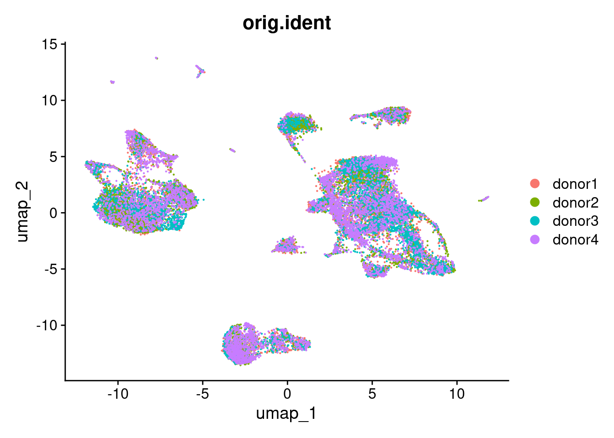

Last updated: 2025-02-23
Checks: 7 0
Knit directory: muse/
This reproducible R Markdown analysis was created with workflowr (version 1.7.1). The Checks tab describes the reproducibility checks that were applied when the results were created. The Past versions tab lists the development history.
Great! Since the R Markdown file has been committed to the Git repository, you know the exact version of the code that produced these results.
Great job! The global environment was empty. Objects defined in the global environment can affect the analysis in your R Markdown file in unknown ways. For reproduciblity it’s best to always run the code in an empty environment.
The command set.seed(20200712) was run prior to running
the code in the R Markdown file. Setting a seed ensures that any results
that rely on randomness, e.g. subsampling or permutations, are
reproducible.
Great job! Recording the operating system, R version, and package versions is critical for reproducibility.
Nice! There were no cached chunks for this analysis, so you can be confident that you successfully produced the results during this run.
Great job! Using relative paths to the files within your workflowr project makes it easier to run your code on other machines.
Great! You are using Git for version control. Tracking code development and connecting the code version to the results is critical for reproducibility.
The results in this page were generated with repository version aad6fa2. See the Past versions tab to see a history of the changes made to the R Markdown and HTML files.
Note that you need to be careful to ensure that all relevant files for
the analysis have been committed to Git prior to generating the results
(you can use wflow_publish or
wflow_git_commit). workflowr only checks the R Markdown
file, but you know if there are other scripts or data files that it
depends on. Below is the status of the Git repository when the results
were generated:
Ignored files:
Ignored: .Rproj.user/
Ignored: data/1M_neurons_filtered_gene_bc_matrices_h5.h5
Ignored: data/293t/
Ignored: data/293t_3t3_filtered_gene_bc_matrices.tar.gz
Ignored: data/293t_filtered_gene_bc_matrices.tar.gz
Ignored: data/5k_Human_Donor1_PBMC_3p_gem-x_5k_Human_Donor1_PBMC_3p_gem-x_count_sample_filtered_feature_bc_matrix.h5
Ignored: data/5k_Human_Donor2_PBMC_3p_gem-x_5k_Human_Donor2_PBMC_3p_gem-x_count_sample_filtered_feature_bc_matrix.h5
Ignored: data/5k_Human_Donor3_PBMC_3p_gem-x_5k_Human_Donor3_PBMC_3p_gem-x_count_sample_filtered_feature_bc_matrix.h5
Ignored: data/5k_Human_Donor4_PBMC_3p_gem-x_5k_Human_Donor4_PBMC_3p_gem-x_count_sample_filtered_feature_bc_matrix.h5
Ignored: data/Parent_SC3v3_Human_Glioblastoma_filtered_feature_bc_matrix.tar.gz
Ignored: data/brain_counts/
Ignored: data/cl.obo
Ignored: data/cl.owl
Ignored: data/jurkat/
Ignored: data/jurkat:293t_50:50_filtered_gene_bc_matrices.tar.gz
Ignored: data/jurkat_293t/
Ignored: data/jurkat_filtered_gene_bc_matrices.tar.gz
Ignored: data/pbmc20k/
Ignored: data/pbmc3k/
Ignored: data/pbmc4k_filtered_gene_bc_matrices.tar.gz
Ignored: data/refdata-gex-GRCh38-2020-A.tar.gz
Ignored: data/seurat_1m_neuron.rds
Ignored: data/t_3k_filtered_gene_bc_matrices.tar.gz
Ignored: r_packages_4.4.1/
Note that any generated files, e.g. HTML, png, CSS, etc., are not included in this status report because it is ok for generated content to have uncommitted changes.
These are the previous versions of the repository in which changes were
made to the R Markdown (analysis/pbmc20k.Rmd) and HTML
(docs/pbmc20k.html) files. If you’ve configured a remote
Git repository (see ?wflow_git_remote), click on the
hyperlinks in the table below to view the files as they were in that
past version.
| File | Version | Author | Date | Message |
|---|---|---|---|---|
| Rmd | aad6fa2 | Dave Tang | 2025-02-23 | Normalised and scaled data are stored as iterable matrices |
| html | 9a02923 | Dave Tang | 2025-02-22 | Build site. |
| Rmd | 6c0d4f0 | Dave Tang | 2025-02-22 | Convert sparse matrix to iterable matrix |
| html | f6301ec | Dave Tang | 2025-02-22 | Build site. |
| Rmd | 22af89e | Dave Tang | 2025-02-22 | Analysing 20k cells |
Read HDF5 files into a list.
hdf5_files <- list.files(path = "data", pattern = "5k_Human", full.names = TRUE)
hdf5_files[1] "data/5k_Human_Donor1_PBMC_3p_gem-x_5k_Human_Donor1_PBMC_3p_gem-x_count_sample_filtered_feature_bc_matrix.h5"
[2] "data/5k_Human_Donor2_PBMC_3p_gem-x_5k_Human_Donor2_PBMC_3p_gem-x_count_sample_filtered_feature_bc_matrix.h5"
[3] "data/5k_Human_Donor3_PBMC_3p_gem-x_5k_Human_Donor3_PBMC_3p_gem-x_count_sample_filtered_feature_bc_matrix.h5"
[4] "data/5k_Human_Donor4_PBMC_3p_gem-x_5k_Human_Donor4_PBMC_3p_gem-x_count_sample_filtered_feature_bc_matrix.h5"Read raw counts into a list of matrices.
mats <- purrr::map(seq_along(hdf5_files), function(x){
my_mat <- Seurat::Read10X_h5(hdf5_files[x])
colnames(my_mat) <- paste0('donor', x, '_', colnames(my_mat))
my_mat
})
str(mats, max.level = 1)List of 4
$ :Formal class 'dgCMatrix' [package "Matrix"] with 6 slots
$ :Formal class 'dgCMatrix' [package "Matrix"] with 6 slots
$ :Formal class 'dgCMatrix' [package "Matrix"] with 6 slots
$ :Formal class 'dgCMatrix' [package "Matrix"] with 6 slotsCreate Seurat object from the list of matrices.
pbmc20k <- CreateSeuratObject(
counts = mats,
min.cells = 3,
min.features = 200
)
pbmc20kAn object of class Seurat
27385 features across 22061 samples within 1 assay
Active assay: RNA (27385 features, 0 variable features)
4 layers present: counts.1, counts.2, counts.3, counts.4Create one count layer.
pbmc20k <- JoinLayers(pbmc20k)
pbmc20kAn object of class Seurat
27385 features across 22061 samples within 1 assay
Active assay: RNA (27385 features, 0 variable features)
1 layer present: countsDonor information in orig.ident.
head(pbmc20k@meta.data) orig.ident nCount_RNA nFeature_RNA
donor1_AAACCAAAGGTGACGA-1 donor1 42833 7079
donor1_AAACCCTGTGACGAGT-1 donor1 4890 2102
donor1_AAACGAATCAGGCTAC-1 donor1 12498 3564
donor1_AAACGACAGATTGACT-1 donor1 22193 4366
donor1_AAACGATGTCTTGAAC-1 donor1 10305 2945
donor1_AAACGATGTGCGCGAA-1 donor1 15947 4160Use {BPCells} to convert the matrices in your already created Seurat objects to on-disk matrices. Note, that this is only possible for V5 assays. Convert the counts matrix of the RNA assay to a BPCells matrix.
BPCells::write_matrix_dir(
mat = BPCells::convert_matrix_type(matrix = pbmc20k@assays$RNA$counts, type = "uint32_t"),
dir = 'data/pbmc20k',
overwrite = TRUE
)27385 x 22061 IterableMatrix object with class MatrixDir
Row names: ENSG00000238009, ENSG00000239945 ... AMELY
Col names: donor1_AAACCAAAGGTGACGA-1, donor1_AAACCCTGTGACGAGT-1 ... donor4_TGTGTTGAGTTACGGC-1
Data type: uint32_t
Storage order: column major
Queued Operations:
1. Load compressed matrix from directory /home/rstudio/muse/data/pbmc20kpbmc20k.mat <- open_matrix_dir(dir = "data/pbmc20k")
pbmc20k@assays$RNA$counts <- pbmc20k.mat
pbmc20k@assays$RNA$counts27385 x 22061 IterableMatrix object with class RenameDims
Row names: ENSG00000238009, ENSG00000239945 ... AMELY
Col names: donor1_AAACCAAAGGTGACGA-1, donor1_AAACCCTGTGACGAGT-1 ... donor4_TGTGTTGAGTTACGGC-1
Data type: uint32_t
Storage order: column major
Queued Operations:
1. Load compressed matrix from directory /home/rstudio/muse/data/pbmc20k
2. Reset dimnamesProcess.
options(future.globals.maxSize = 2 * 1024^3)
fixed_PrepDR5 <- function(object, features = NULL, layer = 'scale.data', verbose = TRUE) {
layer <- layer[1L]
olayer <- layer
layer <- SeuratObject::Layers(object = object, search = layer)
if (is.null(layer)) {
abort(paste0("No layer matching pattern '", olayer, "' not found. Please run ScaleData and retry"))
}
data.use <- SeuratObject::LayerData(object = object, layer = layer)
features <- features %||% VariableFeatures(object = object)
if (!length(x = features)) {
stop("No variable features, run FindVariableFeatures() or provide a vector of features", call. = FALSE)
}
if (is(data.use, "IterableMatrix")) {
features.var <- BPCells::matrix_stats(matrix=data.use, row_stats="variance")$row_stats["variance",]
} else {
features.var <- apply(X = data.use, MARGIN = 1L, FUN = var)
}
features.keep <- features[features.var > 0]
if (!length(x = features.keep)) {
stop("None of the requested features have any variance", call. = FALSE)
} else if (length(x = features.keep) < length(x = features)) {
exclude <- setdiff(x = features, y = features.keep)
if (isTRUE(x = verbose)) {
warning(
"The following ",
length(x = exclude),
" features requested have zero variance; running reduction without them: ",
paste(exclude, collapse = ', '),
call. = FALSE,
immediate. = TRUE
)
}
}
features <- features.keep
features <- features[!is.na(x = features)]
features.use <- features[features %in% rownames(data.use)]
if(!isTRUE(all.equal(features, features.use))) {
missing_features <- setdiff(features, features.use)
if(length(missing_features) > 0) {
warning_message <- paste("The following features were not available: ",
paste(missing_features, collapse = ", "),
".", sep = "")
warning(warning_message, immediate. = TRUE)
}
}
data.use <- data.use[features.use, ]
return(data.use)
}
assignInNamespace('PrepDR5', fixed_PrepDR5, 'Seurat')
seurat_wf_v4 <- function(seurat_obj, scale_factor = 1e4, num_features = 2000, num_pcs = 30, cluster_res = 0.5, debug_flag = FALSE){
seurat_obj <- NormalizeData(seurat_obj, normalization.method = "LogNormalize", scale.factor = scale_factor, verbose = debug_flag)
seurat_obj <- FindVariableFeatures(seurat_obj, selection.method = 'vst', nfeatures = num_features, verbose = debug_flag)
seurat_obj <- ScaleData(seurat_obj, verbose = debug_flag)
seurat_obj <- RunPCA(seurat_obj, verbose = debug_flag)
seurat_obj <- RunHarmony(seurat_obj, "orig.ident")
seurat_obj <- RunUMAP(seurat_obj, reduction = "harmony", dims = 1:num_pcs, verbose = debug_flag)
seurat_obj
}
pbmc20k <- seurat_wf_v4(pbmc20k)Transposing data matrixInitializing state using k-means centroids initializationHarmony 1/10Harmony 2/10Harmony 3/10Harmony converged after 3 iterationsWarning: The default method for RunUMAP has changed from calling Python UMAP via reticulate to the R-native UWOT using the cosine metric
To use Python UMAP via reticulate, set umap.method to 'umap-learn' and metric to 'correlation'
This message will be shown once per sessionNormalised and scaled data are stored as IterableMatrix
objects.
pbmc20k@assays$RNA$data27385 x 22061 IterableMatrix object with class RenameDims
Row names: ENSG00000238009, ENSG00000239945 ... AMELY
Col names: donor1_AAACCAAAGGTGACGA-1, donor1_AAACCCTGTGACGAGT-1 ... donor4_TGTGTTGAGTTACGGC-1
Data type: double
Storage order: column major
Queued Operations:
1. Load compressed matrix from directory /home/rstudio/muse/data/pbmc20k
2. Reset dimnames
3. Convert type from uint32_t to double
4. Scale by 1e+04
5. Scale columns by 2.33e-05, 0.000204 ... 7.7e-05
6. Transform log1p
7. Reset dimnamespbmc20k@assays$RNA$scale.data2000 x 22061 IterableMatrix object with class RenameDims
Row names: HES4, ISG15 ... ENSG00000265995
Col names: donor1_AAACCAAAGGTGACGA-1, donor1_AAACCCTGTGACGAGT-1 ... donor4_TGTGTTGAGTTACGGC-1
Data type: double
Storage order: column major
Queued Operations:
1. Load compressed matrix from directory /home/rstudio/muse/data/pbmc20k
2. Select rows: 19, 20 ... 27288 and cols: all
3. Reset dimnames
4. Convert type from uint32_t to double
5. Scale by 1e+04
6. Scale columns by 2.33e-05, 0.000204 ... 7.7e-05
7. Transform log1p
8. Select rows: 489, 1810 ... 438 and cols: all
9. Reset dimnames
10. Transform min by row: 2.8, 2.49 ... 1
11. Scale rows by 3.59, 4.04 ... 10.1
12. Shift rows by -0.0687, -0.0609 ... -0.12
13. Select rows: 1243, 443 ... 1553 and cols: all
14. Reset dimnamesUMAP.
DimPlot(pbmc20k, reduction = "umap", group.by = "orig.ident", pt.size = .1)
| Version | Author | Date |
|---|---|---|
| f6301ec | Dave Tang | 2025-02-22 |
sessionInfo()R version 4.4.1 (2024-06-14)
Platform: x86_64-pc-linux-gnu
Running under: Ubuntu 22.04.5 LTS
Matrix products: default
BLAS: /usr/lib/x86_64-linux-gnu/openblas-pthread/libblas.so.3
LAPACK: /usr/lib/x86_64-linux-gnu/openblas-pthread/libopenblasp-r0.3.20.so; LAPACK version 3.10.0
locale:
[1] LC_CTYPE=en_US.UTF-8 LC_NUMERIC=C
[3] LC_TIME=en_US.UTF-8 LC_COLLATE=en_US.UTF-8
[5] LC_MONETARY=en_US.UTF-8 LC_MESSAGES=en_US.UTF-8
[7] LC_PAPER=en_US.UTF-8 LC_NAME=C
[9] LC_ADDRESS=C LC_TELEPHONE=C
[11] LC_MEASUREMENT=en_US.UTF-8 LC_IDENTIFICATION=C
time zone: Etc/UTC
tzcode source: system (glibc)
attached base packages:
[1] stats graphics grDevices utils datasets methods base
other attached packages:
[1] BPCells_0.3.0 Seurat_5.1.0 SeuratObject_5.0.2 sp_2.1-4
[5] harmony_1.2.1 Rcpp_1.0.13 patchwork_1.3.0 lubridate_1.9.3
[9] forcats_1.0.0 stringr_1.5.1 dplyr_1.1.4 purrr_1.0.2
[13] readr_2.1.5 tidyr_1.3.1 tibble_3.2.1 ggplot2_3.5.1
[17] tidyverse_2.0.0 workflowr_1.7.1
loaded via a namespace (and not attached):
[1] RColorBrewer_1.1-3 rstudioapi_0.17.1 jsonlite_1.8.9
[4] magrittr_2.0.3 spatstat.utils_3.1-0 farver_2.1.2
[7] rmarkdown_2.28 fs_1.6.4 vctrs_0.6.5
[10] ROCR_1.0-11 spatstat.explore_3.3-3 htmltools_0.5.8.1
[13] sass_0.4.9 sctransform_0.4.1 parallelly_1.38.0
[16] KernSmooth_2.23-24 bslib_0.8.0 htmlwidgets_1.6.4
[19] ica_1.0-3 plyr_1.8.9 plotly_4.10.4
[22] zoo_1.8-12 cachem_1.1.0 whisker_0.4.1
[25] igraph_2.1.1 mime_0.12 lifecycle_1.0.4
[28] pkgconfig_2.0.3 Matrix_1.7-0 R6_2.5.1
[31] fastmap_1.2.0 MatrixGenerics_1.18.1 fitdistrplus_1.2-1
[34] future_1.34.0 shiny_1.9.1 digest_0.6.37
[37] colorspace_2.1-1 ps_1.8.1 rprojroot_2.0.4
[40] tensor_1.5 RSpectra_0.16-2 irlba_2.3.5.1
[43] labeling_0.4.3 progressr_0.15.0 fansi_1.0.6
[46] spatstat.sparse_3.1-0 timechange_0.3.0 httr_1.4.7
[49] polyclip_1.10-7 abind_1.4-8 compiler_4.4.1
[52] bit64_4.5.2 withr_3.0.2 fastDummies_1.7.4
[55] highr_0.11 MASS_7.3-60.2 tools_4.4.1
[58] lmtest_0.9-40 httpuv_1.6.15 future.apply_1.11.3
[61] goftest_1.2-3 glue_1.8.0 callr_3.7.6
[64] nlme_3.1-164 promises_1.3.0 grid_4.4.1
[67] Rtsne_0.17 getPass_0.2-4 cluster_2.1.6
[70] reshape2_1.4.4 generics_0.1.3 hdf5r_1.3.11
[73] gtable_0.3.6 spatstat.data_3.1-2 tzdb_0.4.0
[76] data.table_1.16.2 hms_1.1.3 utf8_1.2.4
[79] spatstat.geom_3.3-3 RcppAnnoy_0.0.22 ggrepel_0.9.6
[82] RANN_2.6.2 pillar_1.9.0 spam_2.11-0
[85] RcppHNSW_0.6.0 later_1.3.2 splines_4.4.1
[88] lattice_0.22-6 bit_4.5.0 deldir_2.0-4
[91] survival_3.6-4 tidyselect_1.2.1 miniUI_0.1.1.1
[94] pbapply_1.7-2 knitr_1.48 git2r_0.35.0
[97] gridExtra_2.3 scattermore_1.2 RhpcBLASctl_0.23-42
[100] xfun_0.48 matrixStats_1.4.1 stringi_1.8.4
[103] lazyeval_0.2.2 yaml_2.3.10 evaluate_1.0.1
[106] codetools_0.2-20 cli_3.6.3 uwot_0.2.2
[109] xtable_1.8-4 reticulate_1.39.0 munsell_0.5.1
[112] processx_3.8.4 jquerylib_0.1.4 spatstat.random_3.3-2
[115] globals_0.16.3 png_0.1-8 spatstat.univar_3.0-1
[118] parallel_4.4.1 dotCall64_1.2 listenv_0.9.1
[121] viridisLite_0.4.2 scales_1.3.0 ggridges_0.5.6
[124] leiden_0.4.3.1 rlang_1.1.4 cowplot_1.1.3